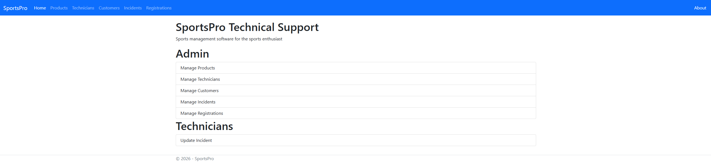
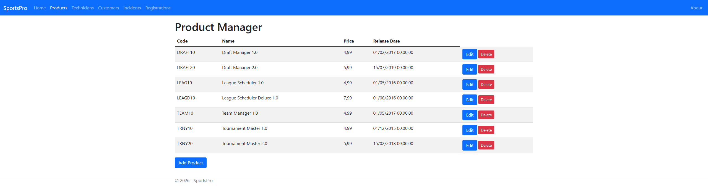
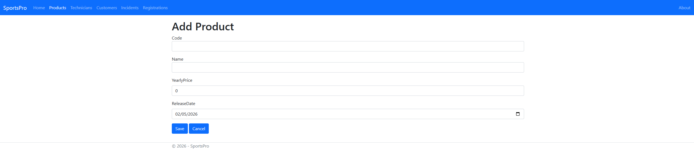
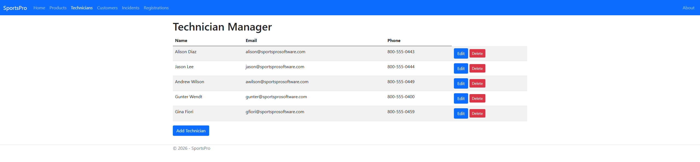
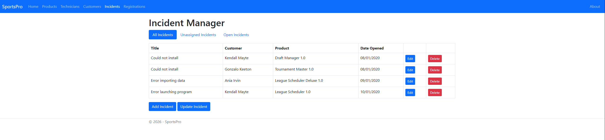

About the Project
SportsPro is a web-based technical support management system developed for a fictional sports software company. The application allows administrators to manage their entire support operation from one place — tracking products, technicians, customers, incidents, and registrations.
Built using ASP.NET Core MVC with Entity Framework, the application follows the repository design pattern and uses a code-first database approach with seed data to pre-populate the system. It features full CRUD (Create, Read, Update, Delete) functionality across all entities, with a clean role-based dashboard separating Admin and Technician views.
Technologies Used
Key Features
- Admin dashboard with links to manage Products, Technicians, Customers, Incidents, and Registrations
- Technician view for updating assigned incidents
- Full CRUD operations across all entities — add, edit, and delete records
- Code-first Entity Framework database with migration support and seed data
- Generic repository pattern for clean, reusable data access logic
- Razor Views with Bootstrap for a clean, responsive UI
Screenshots

Home page — Admin and Technician dashboard

Product Manager — list of all products

Add Product form

Technicians management page

Incidents tracking page
Sample Code
Generic repository pattern used for all data access across the application:
// Repository.cs — Generic Repository Pattern
public class Repository<T> : IRepository<T> where T : class
{
private SportProContext context { get; set; }
private DbSet<T> dbset { get; set; }
public Repository(SportProContext ctx)
{
context = ctx;
dbset = context.Set<T>();
}
public virtual IEnumerable<T> List(QueryOptions<T> options)
{
IQueryable<T> query = dbset;
foreach (string include in options.Includes.Split(',',
StringSplitOptions.RemoveEmptyEntries))
{
query = query.Include(include);
}
if (options.Where != null)
query = query.Where(options.Where);
if (options.OrderBy != null)
query = query.OrderBy(options.OrderBy);
return query.ToList();
}
public virtual T? Get(int id) => dbset.Find(id);
public virtual void Insert(T entity) => dbset.Add(entity);
public virtual void Update(T entity) => dbset.Update(entity);
public virtual void Delete(T entity) => dbset.Remove(entity);
public virtual void Save() => context.SaveChanges();
}